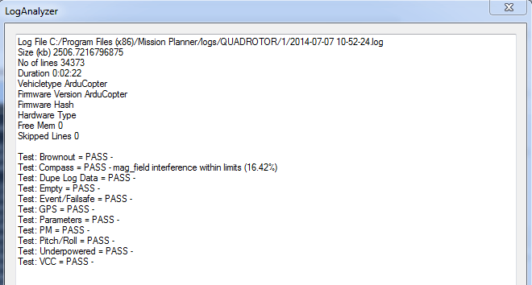
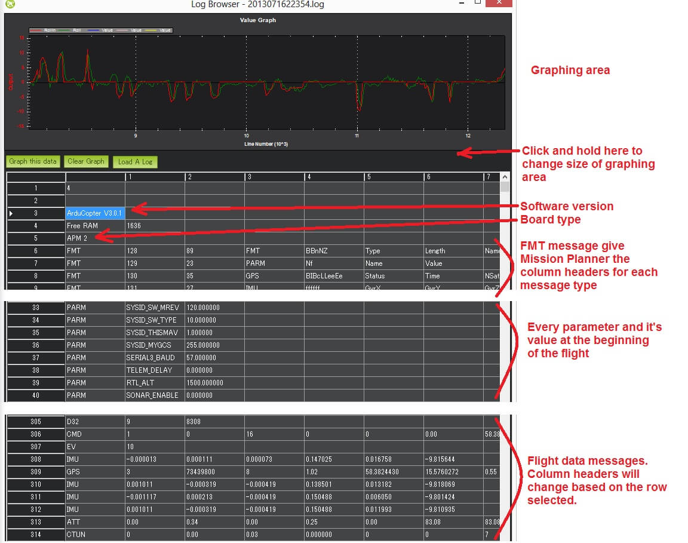
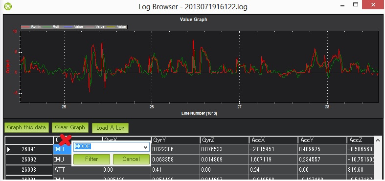

闪存日志分析
概述
闪存日志有2种分析方式：
- 自动分析 ：使用地面站的自动分析功能，分析飞行日志，直接获得比较重要的问题结果报告，比较简单明了
- 手动分析 ：使用地面站的回顾日志 功能，进行手动分析，需要有一定的基础和经验
自动分析：
打开MP地面站>>飞行数据>>>自动分析
加载下载下来的**.bin格式的飞行日志
注意地面站版本，版本不对或者太旧，可能会出错，请尝试更换新版本的地面站

手动分析闪存日志：
通过Mavlink下载日志，会存放在MissionPlanner/logs下级目录，根据不同的飞行器类型命名的目录。如QUADCOPTER or ROVER
日志的基本格式是：
- 行号在日志分析窗口的左侧
固件版本号和飞行器类型在顶部可以显示
FMT消息显示的是每个不同消息类型内容
PARM行显示参数类型和对应的值 （按飞控EEPROM中的顺序排列）
飞行数据信息，包括GPS，IMU

通过点击选定的行，你可以看到图表和飞行数据，列标题会随之更新。下一列用图表表示的列，选中后点击“Graph this data”按钮。在这个例子中，以上ATT’S Roll-In 及 Roll数据会被图表化。滑动鼠标滚轮能够放大和缩小图表。同样你也可以选中图表中某一区域放大或缩小。通过右击鼠标，并选中“Set Scale to Default”同样可以缩小图表。点击链接Here’s
有一个该特征的迷你的教程。你也可以通过先点击第一列并从下拉菜单中选中第一列来忽略第一列（飞行数据信息类型）。这尤其对于通过MP浏览不同飞行模式（详见MODE信息）十分有用。再次点击第一列“Cancel”按钮清除过滤。

设置要记录的数据
LOG_BITMASK参数控制数据闪存中记录的消息类型。mp地面站和ardupilot的最新版本允许从MP的配置/调整，标准参数屏幕启用/禁用个别消息。（一般使用默认，不禁用，否则可能无法分析故障原因）
消息详解（COPTER固件专用）
ATT (姿态信息):
| RollIn | 飞手想要的roll角度，单位为厘米（左侧为负，右边为正） |
|---|---|
| Roll | 飞行器实际的roll角度，单位为厘米（左侧为负，右侧为正） |
| PitchIn | 飞手想要的pitch角度，单位：厘米-度（往前为负,往后为正） |
| Pitch | 飞行器实际的pitch角度，单位：厘米（往前为负，往后为正） |
| YawIn | 飞手想要的偏航率，范围：-4500~4500（不是度/秒，顺时针为正） |
| Yaw | 飞行器实际航向，单位：度，且0=北 |
| NavYaw | 飞手想要的航向，单位：度 |
ATUN (自动调参概述):
| Axis: 0 = Roll, 1 = Pitch | |
|---|---|
| TuneStep | 0=返回水平（测试前或测试后），1=测试（即执行抽搐测试响应），2=更新增益 |
| RateMin | 本次测试期间最低的记录率 |
| RateMax | 本测试期间最高记录率 |
| RPGain | 正在测试p值的增益值 |
| RDGain | 正在测试的速率D增益值 |
| SPGain | 正在测试的自稳p增益 |
ATDE (自动调参步骤及细节):
| Angle | 飞行器以被测试轴的厘米为单位 |
|---|---|
| Rate | 被测试飞行器轴的转速 |
CAM (触发快门时间和位置):
| GPSTime | gps报告时间，以毫秒为单位 |
|---|---|
| Lat | 加速计+gps纬度估算 |
| Lng | 加速计+gps经度估算 |
| Alt | 加速计+气压计估算高度 |
| Roll | 飞行器的roll角度（以厘米为单位） |
| Pitch | 飞行器俯仰角（以厘米为单位） |
| Yaw | 飞行器航向角度（以度为单位） |
CMD (从地面站接收到的命令或作为任务的一部分的执行命令):
| CTot | 任务总命令数 |
|---|---|
| CNum | 在这个任务中的命令号(0总是在家，1是第一个任务） |
| CId | mavlink 的信息id |
| Copt | 选项参数（用于许多不同的用途） |
| Prm1 | 命令的参数（用于许多不同的用途） |
| Alt | 指挥部的高度，以米为单位 |
| Lat | 指挥部的纬度位置 |
| Lng | 指挥部的精度位置 |
COMPASS (原始罗盘偏移及罗盘补偿值):
| Field | 描述 |
|---|---|
| MagX, MagY. MagZ | x,y,z轴原始磁场值 |
| OfsX, OfsY, OfsZ | 原始磁偏移（仅当compass_lenarn参数为1时才会更改） |
| MOfsX, MOfsY, MOfsZ | ompassmot补偿 或电流 |
CURRENT (电池电压，电流和电路板电压信息):
| FIELD | DESCRIPTION |
|---|---|
| Thr | 飞行员输入油门从 0 ~ 1000 |
| ThrInt | 总油门（即全部油门的总和） |
| Volt | 电池电压伏特* 100 |
| Curr | 电流 * 100 |
| Vcc | 主板电压 |
| CurrTot | 消耗的总电流 |
CTUN (油门和高度信息):
| FIELD | DESCRIPTION |
|---|---|
| ThrIn | 飞手输入的油门从 0 到1000 |
| SonAlt | 声呐测量到的高度 |
| BarAlt | 气压计测量到的高度 |
| WPAlt | 定高，悬停，返航或自动模式下的目标高度 |
| NavThr | 没用使用 |
| AngBst | 飞行器倾斜时会增加的油门大小，为0~1000 |
| CRate | 加速计与气压计估计的上升速率，单位cm/s |
| ThrOut | 油门最终输出大小传送到电机（从0~1000）在自稳模式下相当于thrin+angbst |
| DCRate | 飞行员想要的上升速率单位为cm/s |
D32, DU32 (单数据值是带符号的32位整数或者无符号的32位整数):
| FIELD | DESCRIPTION |
|---|---|
| id | 变量的识别号，只可能有下面两个值 |
| 7 = 内部状态的位掩码 <https://github.com/ardupilot/blob/master/arducopter/arducopter.cpp#l361> | |
| 9 = 简单模式的初始名称，单位cm |
EKF (Extended Kalman Filter):
Log information here(Dev Wiki). Overviewhere.
EV: (状态编码):
| Event No | DESCRIPTION |
|---|---|
| 10 | 已解锁 |
| 11 | 已锁定 |
| 15 | 自动驾驶（飞手将油门上升到零以上，自动驾驶仪可以自由控制油门） |
| 16 | 自动起飞 |
| 18 | 降落完毕 |
| 25 | 设置家的位置（家的位置坐标已捕获） |
GPS:
| FIELD | DESCRIPTION |
|---|---|
| Status | 0 = 没有识别到 GPS, 1 = 识别到GPS 但未定位, 2 = GPS和 2D 定位成功, 3 = GPS 与 3D 定位成功 |
| Time | gps报告时间，以毫秒为单位 |
| NSats | 当前使用的卫星数量 |
| HDop | 测量gps定位精度（1.5是好的，>2.0不是很好）https://en.wikipedia.org/wiki/dilution_of_precision |
| Lat | 根据gps的纬度 |
| Lng | 根据gps的经度 |
| RelAlt | 加速计与气压计估算高度，以米为单位 |
| Alt | gps报告的高度（飞控未使用） |
| SPD | 水平地面速度 ，单位m/s |
| GCrs | 航向（0=北） |
IMU (加速度和陀螺仪信息):
| FIELD | DESCRIPTION |
|---|---|
| GyrX, GyrY, GyrZ | 原始陀螺仪旋转速度。单位:度/秒 |
| AccX, AccY, AccZ | 原始加速度值 ，单位：m/s/s |
Mode (飞行信息):
| FIELD | DESCRIPTION |
|---|---|
| Mode | 飞行模式显示为字符串 (即 STABILIZE, LOITER,等) |
| ThrCrs | 巡航油门(从 0 ~ 1000) 可以通过这个参数推测悬停需要什么油门 |
NTUN (导航信息):
| FIELD | DESCRIPTION |
|---|---|
| WPDst | 下一个航点的距离（或悬停目标） 以厘米为单位，仅在Loiter, RTL, Auto模式下更新. |
| WPBrg | 下一个航点的方位（以度为单位） |
| PErX | 直升机的下一个航点的纬度方向的距离 |
| PErY | 直升机下一个航点的纬度方向的距离 |
| DVelX | 纬度方向所需速度（以度/秒为单位） |
| DVelY | 经度方向所需速度（以度/秒为单位） |
| VelX | 纬度方向的实际加速度+气压计估计速度 |
| VelY | 经度方向的实际加速度+gps估算速度 |
| DAcX | 纬度方向的所需加速度，单位cm/s/s |
| DAcY | 经度方向的所需加速度，单位cm/s/s |
| DRol | 所需roll角度 单位：厘/度 |
| DPit | 所需pitch角度，单位：厘/度 |
PM (performance monitoring):
| FIELD | DESCRIPTION |
|---|---|
| RenCnt | DCM renormalization count - a high number may indicate problems in DCM (extremely rare) |
| RenBlw | DCM renormalization blow-up count - how many times DCM had to completely rebuild the DCM matrix since the last PM. Normally innocuous but a number that constantly grows may be an indication that DCM is having troubles calculating the attitude (extremely rare) |
| FixCnt | The number of GPS fixes received since the last PM message was received (it’s hard to imagine how this would be useful) |
| NLon | Number of long running main loops (i.e. loops that take more than 5% longer than the 10ms they should) |
| NLoop | The total number of loops since the last PM message was displayed. This allows you to calculate the percentage of slow running loops (which should never be higher than 15%). Note that the value will depend on the autopilot clock speed. |
| MaxT | The maximum time that any loop took since the last PM message. This should be close to 10,000 but will be up to 6,000,000 during the interval where the motors are armed |
| PMT | A number that increments each time a heart beat is received from the ground station |
| I2CErr | The number of I2C errors since the last PM message. Any I2C errors may indicate a problem on the I2C bus which may in turn slow down the main loop and cause performance problems. |
RCOUT (pwm output to individual RC outputs):
RC1, RC2, etc :
| Error |
|---|
| DESCRIPTION | |
|---|---|
| 1:Main | （没用过) |
| 2:Radio（无线电） | ECode 1: “Late Frame” 意味着飞控超过两秒未接收到遥控信号 |
| 3:Compass（罗盘） | ECode 1: 指南针不能初始化（可能是硬件问题）ECode 0: 以上错误解决 |
| 4:Optical flow（光流） | Ecode 1: 无法初始化 |
| 5:Throttle failsafe（油门安全保护） | ECode 1: 油门降到 FS_THR_VALUE （失控油门触发值）以下，可能是飞控没有接收到遥控信号（油门），请检查遥控信号输入或者失控保护设置 ECode 0: 上述错误解决 |
| 6:Battery failsafe（电池低压保护） | ECode 1: 电池电压低于LOW_VOLT （低压保护触发值）或电池过度放电能力超过BATT_CAPACITY |
| 7: GPS failsafe（gps安全故障） | ECode 1: gps断开锁定至少5秒钟ECode 0: gps恢复锁定 |
| 8: GCS failsafe（地面站安全保护） | ECode 1: 地面站操纵杆至少五秒钟未变化ECode 0: 恢复地面站更新 |
| 9: Fence（地理围栏） | ECode 1: 超过围栏限定高度 ECode 2: 超过围栏限定范围 ECode 3:同时超过围栏限定范围和高度 ECode 0: 飞行器回到限定范围内 |
| 10: Flight Mode（飞行模式） | ECode 0 ~ 17: 飞行器切换到想要的模式失败: 0=Stabilize, 1=Acro, 2=AltHold, 3=Auto, 4=Guided, 5=Loiter, 6=RTL, 7=Circle, 8=Position, 9=Land, 10=OF_Loiter, 11=Drift, 13=Sport, 14=Flip, 15=AutoTune, 16=PosHold, 17=Brake |
| 11: GPS | ECode 2: GPS 故障 ECode 0: GPS 故障解除 |
| 12: Crash Check（撞击检查） | ECode 1: 检测到撞击 |
ERR(错误信息代号)
下面列出：子系统及错误代码
1：Main(从未使用)
2：无线电（Radio）
ECode 1：“Late Frame”意思是APM的板载ppm编码器，至少2秒钟了没有更新数据。
ECode 0：意思是ppm编码器恢复数据更新，错误已解决。
3：Compass（罗盘）
ECode 1：罗盘初始化失败(很可能是硬件问题)
ECode 2：从罗盘读取数据失败（可能是硬件问题）
ECode：上述错误已解决
4：Optical flow（光流）
ECode 1：初始化失败(很可能是硬件问题)
5：油门安全故障
ECode 1：油门下降到参数FS_THR_VALUE以下,可能 数传 RX/TX失去连接
ECode 0：上述问题解决，意思是 数传 RX/TX恢复连接
6：电池安全故障
ECode 1：电池电压低于参数LOW_VOLT，或电池过度放电能力超过参数BATT_CAPACITY
7：GPS安全故障
ECode 1：GPS断开锁定至少5秒钟
ECode 0：GPS恢复锁定
8：GCS(地面站)安全故障
ECode 1：地面站的操纵杆，至少5秒钟未变化。
ECode 0：恢复地面站的更新
9：围栏
ECode 1：超过电子围栏限定高度
ECode 2：超过电子围栏限定范围
ECode 3：超过限定海拔高度和围栏范围
ECode 1：飞行器回到限定范围内
10：飞行模式
ECode 0 – 10：飞行器不能进入想要的飞行模式
（0 = 自稳，1 = 特技，2 = 定高，3 = 自动，4 = 导航，5 = 悬停，6 = 返航，7 = 盘旋，8 = 定位，9 = 着陆，10 = 光流—悬停）
11：GPS
ECode 2：GPS故障
ECode 0：GPS已故障清除
12：撞击检查
ECode 1：检测到撞击